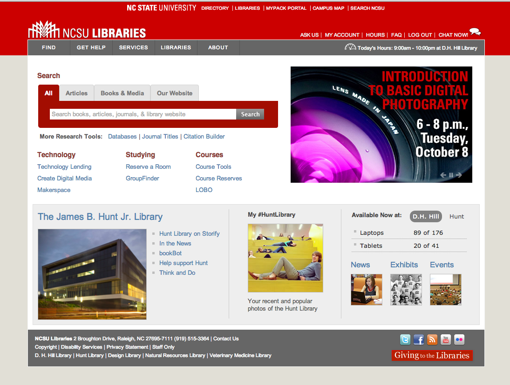
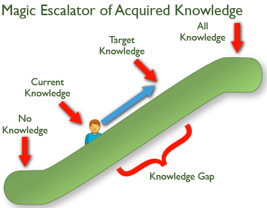
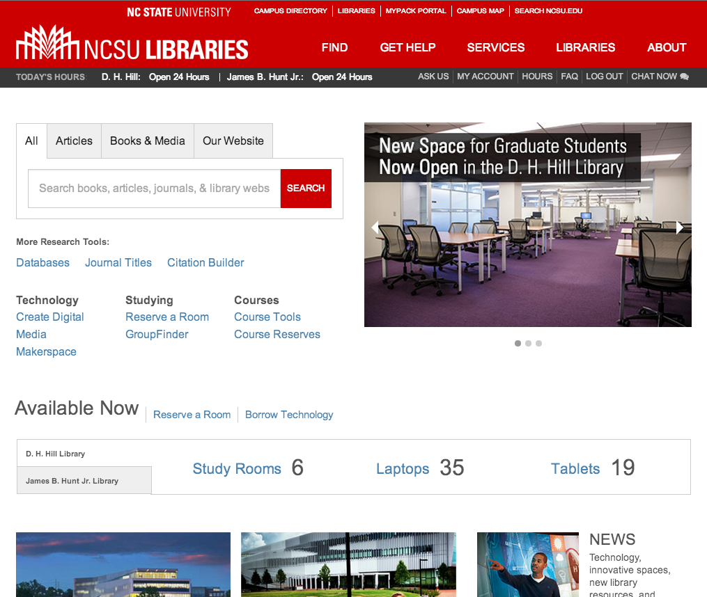

class: center, middle, inverse # Boiling a Frog: A Responsive Update (sneak peak edition) ## Angie Fullington and Charlie Morris NCSU Libraries --- # Agenda 1. Why update? 2. The Magic Escalator 3. Boiling a Frog 4. Intelligent Inconsistency 5. GitHub 6. Who + When --- # Why update? * Fixed width * Outdated look and feel * UI development leadership needed ---  --- # Why update? ## Scope: * Brand and style guide standards * Flat * Responsive design --- --- --- # Subtle changes... * increasing font size * removing borders * removing drop-shadows * removing background colors * replacing icons * adding margin/padding --- class: large The Magic Escalator of Acquired Knowledge represents all the knowledge the user can have about the design. When they are at the bottom, they know very little about the design, and when they are at the top, they know everything there is to know about it. -Jared Spool [uie.com/articles/magic_escalator](http://uie.com/articles/magic_escalator) ---  ---  --- # When will it launch? * End of semester --- class: center, middle, inverse # GitHub is a project management tool --- # Who * Angie Fullington * Erik Olson * Charlie Morris * Eric Pauley Other colleagues to thank: Cory Lown, Jason Raitz, Jason Ronallo, Jason Casden, Troy Hurteau, Chuck Samuels --- # Feedback and advice welcome * @afullington, angie_fullington@ncsu.edu * @cdmo, cdmorris@ncsu.edu .large[Stuff we use: Foundation 5+Sass, Drupal 7, FontAwesome, jQuery 1.10, modernizr] .deemphasize[Toad designed by Christy Presler from the Noun Project, Hot Water designed by Nathan Stang from the Noun Project.]